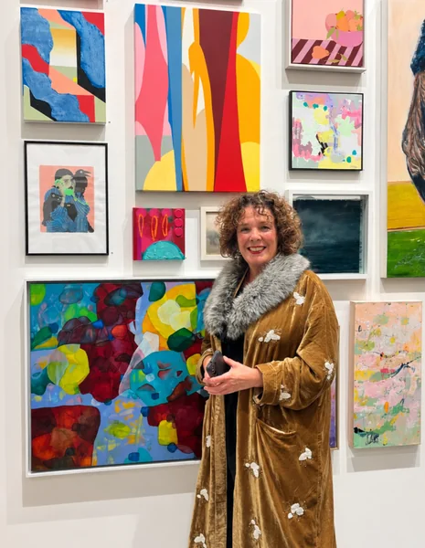
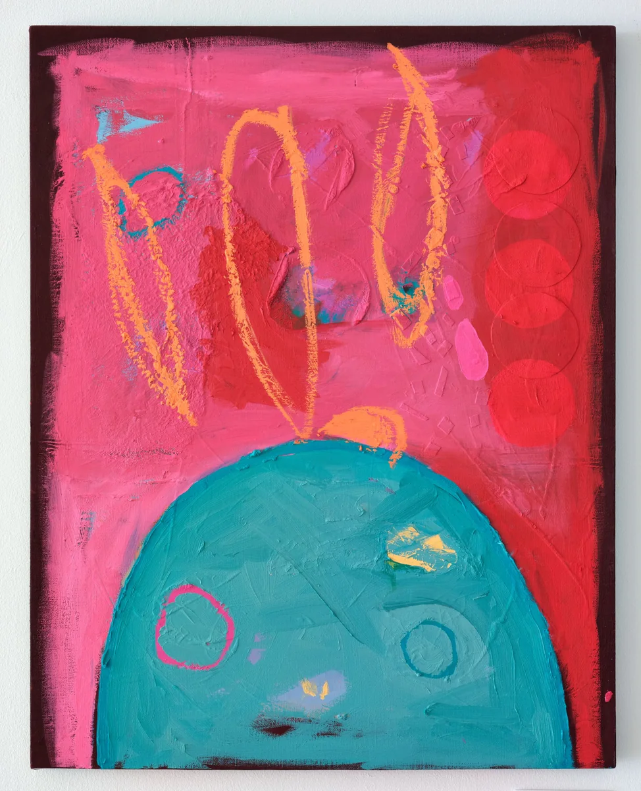
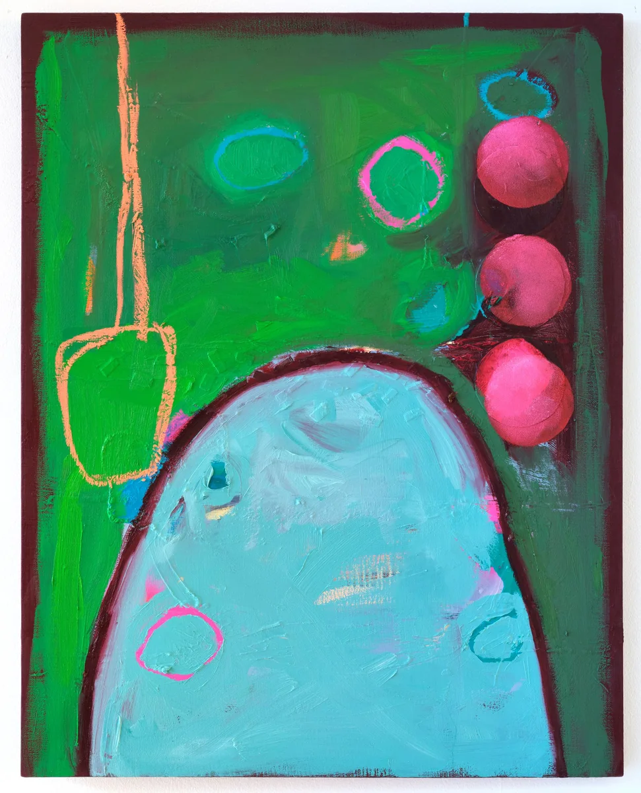
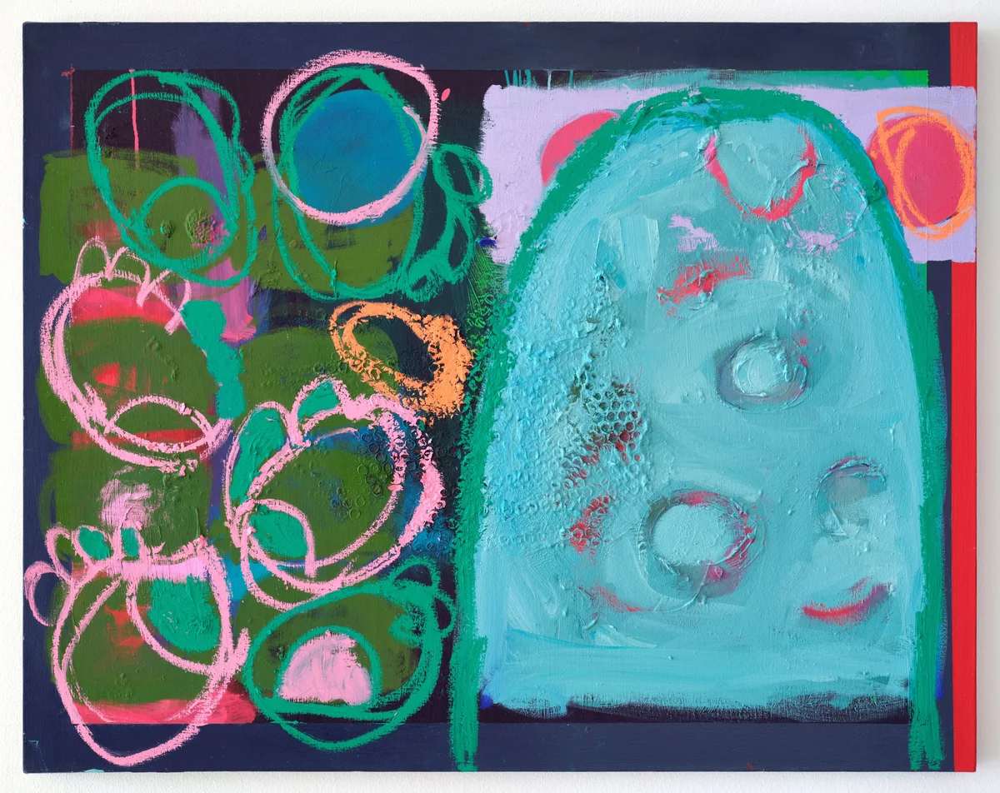
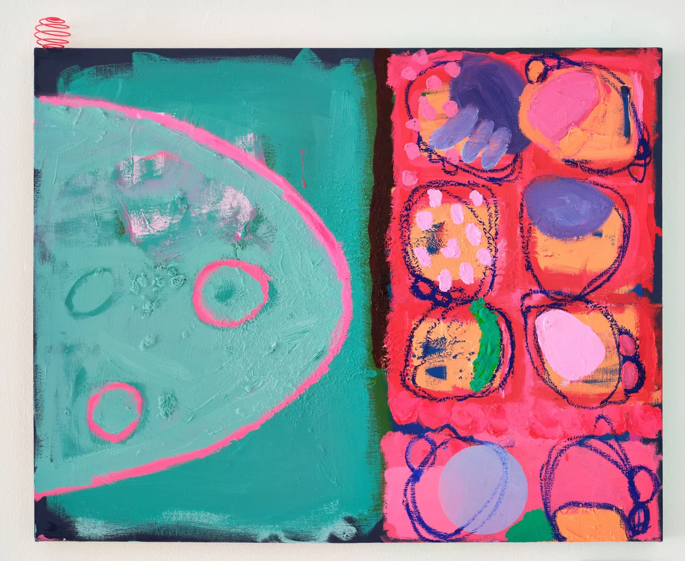

Anna Marie Savage
Anna Marie Savage is an abstract painter whose work explores the relationship between art, science and the environment, using microscopy to make the invisible visible through colour, form and texture.
Works
5 artworks
 Uisce Salach I2024 · Oil and Oil Bar on Canvas · 100 × 70 × 3.5 cm€2,155
Uisce Salach I2024 · Oil and Oil Bar on Canvas · 100 × 70 × 3.5 cm€2,155
Uisce Salach II2025 · Oil and Oil Bar on Canvas · 92 × 73 × 5 cm€2,155
Uisce Salach III2025 · Oil and Oil Bar on Canvas · 92 × 73 × 5 cm€2,155
Uisce Salach IV2025 · Oil and Oil Bar on Canvas · 73 × 92 × 5 cm€2,155
Uisce Salach V2025 · Oil and Oil Bar on Canvas · 72 × 93 × 5 cm€2,155
About Anna
Anna Marie Savage is a visual artist based in Omeath, Co. Louth, whose practice centres on abstract oil painting informed by environmental research, fieldwork and microscopy. Her work explores the relationship between human activity, environmental degradation and the often unseen ecological systems within our waterways. Her recent body of work, Uisce Salach (Dirty Water), investigates the environmental impact of illicit fuel dumping along the Irish border, developed through water sampling, photomicrography and collaboration with researchers at the University of Leeds. Her practice has since expanded into three-dimensional experimentation with laser-cut fluorescent acrylic, while painting remains central to her work. Recent solo exhibitions include Uisce Salach agus Dríodar at An Cultúrlann, Belfast (2025) and Uisce Salach at Watergate Theatre, Kilkenny (2025). She received the Newgrange Gold Award at Surveyor 2025. In 2026, she was an award winner at the inaugural international Sidney Nolan Art Prize, receiving a residency at the Burren College of Art. The prize invited artists to explore humanity's relationship with the natural world and the environment. Her award-winning work, Uisce Salach I, reflects these concerns through its investigation of environmental damage along the Irish border. She graduated with First Class Honours in Fine Art from the University of Ulster in 2009.
Interested in Anna Marie Savage's work?
Send an enquiry through PlotArt and we'll put you in touch with the artist.
Enquire through PlotArt